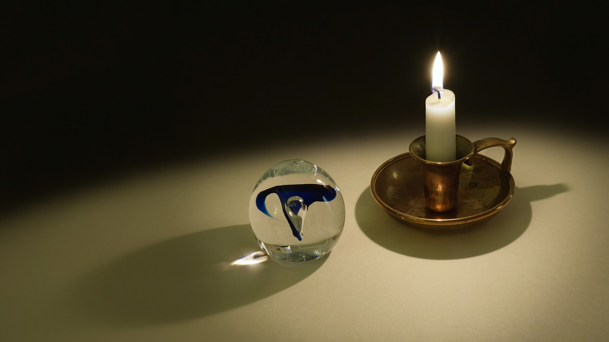
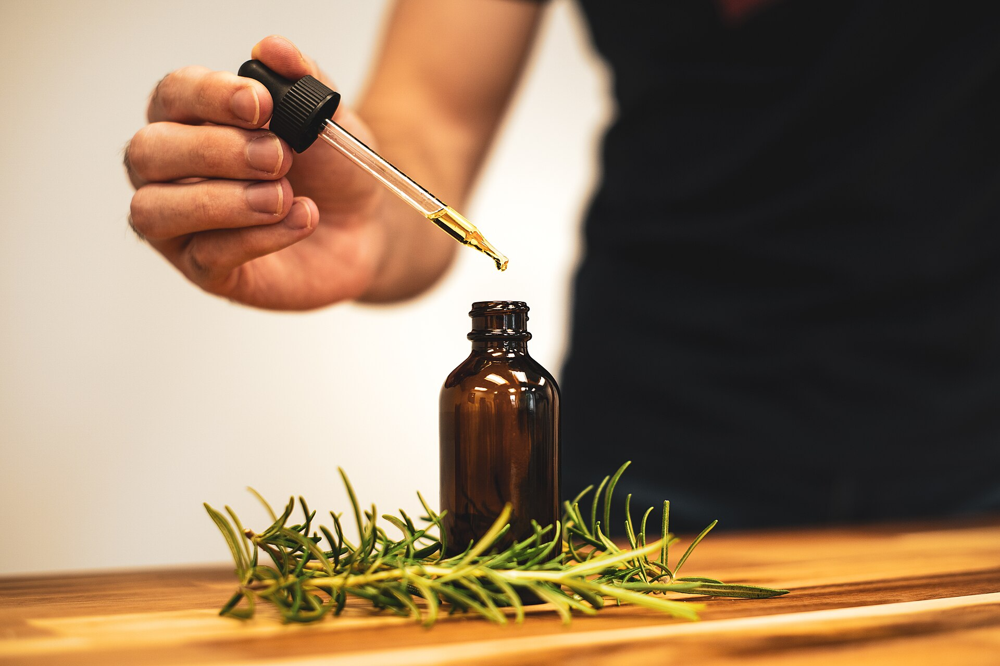

After the birth, care for you.
Aftercare for body and mind, specialised in cupping for C-section scars.
Dear mother,
Everyone asks about the baby. We ask about you.
A birth leaves its marks on the body and on the mind, and both deserve time. Come as you are, sore, tired or only curious. We will go slowly.
With care, Tend Aftercare

What we do, by name
Body
C-section cupping
Soft silicone cups lift the tissue around a healed scar so it can move freely again.
Postpartum massage
Slow work for the belly, lower back, hips and shoulders.
Scar care lesson
Learn the strokes that keep your scar soft at home.
Mind
Birth story hour
Tell it from start to finish, unhurried, to someone who listens.
Breath and rest
Guided breathing that settles a tired nervous system.
Check-in call
A short call between visits, for the days that feel heavy.

C-section cupping, plainly
A scar goes deeper than skin. Cupping helps the layers glide again.
- When to start
- Six to eight weeks after birth, once your doctor agrees.
- How it feels
- A gentle lift and stretch, at your pace.
- Older scars
- Scars from years ago can still be treated.
- What it may ease
- Pulling, tenderness and the firm ridge above the scar.
